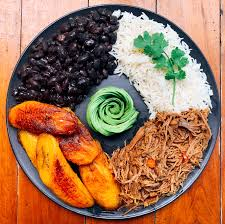

Pabellon

The Pabellon
It's a traditional Venezuelan dish that is considered the national dish.
It mixes elements from the three different cultures that intermixed during Spanish colonial times: Native Americans,
Spanish and Africans
The name pabellón means flag, and the dish is arranged on the plate so that the red tomatoes and steak, black beans,
and the white rice resemble the three stripes of a tri-color flag.
Ingredients
- 1lbs Flank Steak
- 2tbsp Bouillon Cubes
- 1cup White Rice
- 4 cloves of Garlic
- 1 Chopped Onion
- 1 Can Black Bean
- 1tsp Chicken Bouillon Cubes
- 1tsp Garlic Powder
- 2 medium Tomatoes
- 2tsp Butter
How To Make Pabellon
- Gather the ingredients.
- Place the flank steak in a pot with the bouillon, and cover with water.
- Bring to a boil and simmer on low for 1 1/2 hours, or until the meat is tender. Remove from heat and set aside.
- Saute half of the minced garlic in a medium pot with 4 tablespoons of the vegetable oil for 1 to 2 minutes over medium heat.
- Add 2 cups water and 1 teaspoon salt and bring to a boil.
- Add the rice to the boiling water, lower the heat, and simmer the rice, covered, for 10 to 15 minutes. Turn off the heat and leave the rice covered for 5 minutes more.
- Add the remaining 2 tablespoons vegetable oil to a skillet, and saute half the chopped onions with the rest of the minced garlic until soft.
- Add the can of black beans (undrained), 1/2 cup water, chicken bouillon, cumin, garlic powder, vinegar, and 1/2 teaspoon salt, and simmer on low heat for about 10 minutes, until the liquid is reduced.
- Slice the cooled steak against the grain into thin slices. The meat should be very tender and falling apart. Shred the larger pieces into bite-size pieces with your fingers.
- Add 2 tablespoons butter to a skillet and cook the rest of the chopped onions until soft. Add the tomatoes, 1 cup of the steak pan juices, and the sliced steak and simmer for 3 to 5 minutes. Remove from heat and cool.
- Arrange the meat and tomatoes on 1/3 of a serving platter. Place the rice next to the meat, and then place the beans on the other side of the rice, to resemble the stripes of a tri-color flag.
- Serve with fried plantains on the side and enjoy!